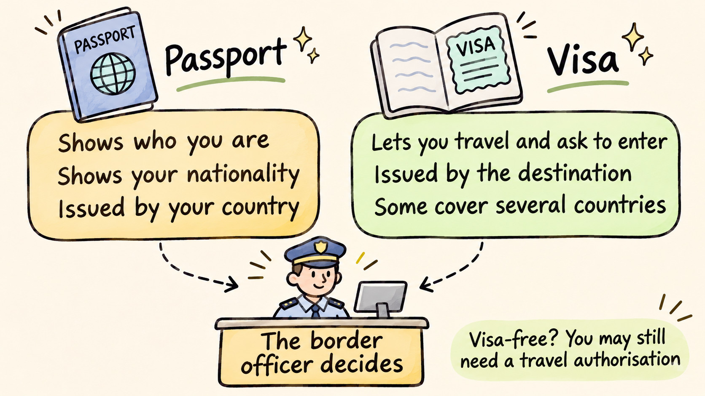

What Is the Difference Between a Visa and a Passport?
Travel Document Vault

Key Takeaways
- A passport is issued by your country and proves your citizenship and identity.
- A visa is issued by a destination country and grants you permission to enter it.
- You need both documents for most international travel, though some destinations require only a passport.
- Visa requirements vary by nationality and destination, so always verify requirements before travelling.
- Tracking visa expiry dates separately from your passport helps prevent travel disruptions.
Passport and visa sound almost interchangeable, but they do different jobs: one identifies you, the other admits you, and most international trips need both. First-time travellers often assume holding one covers the other, and that assumption can cause real trouble at check-in or at the border, when there's no time left to sort it out.
What Is a Passport
Your passport contains your name, date of birth, photo, and a unique passport number, issued by your government and recognised worldwide as proof of your citizenship.
It works as your official identification for international travel. For most international trips you need it to leave your country and to be admitted abroad, although some regions accept other documents, such as national ID cards within Europe or a US passport card at land and sea crossings. Immigration officers examine it at borders, airlines require it for international flights, and customs officials check it when you arrive.
Passports are typically valid for several years (often 10 years for adults, 5 years for children), though validity periods vary by country. When your passport expires, you cannot travel internationally and must apply for a renewal. Keeping track of that date matters more than most people expect, because many countries require at least 6 months of validity remaining before they'll let you in, so a passport that hasn't expired can still turn you away at the border. Your destination's embassy will confirm the exact rule it applies.
What Is a Visa
A visa is official permission issued by a destination country that allows you to enter and stay there for a specific purpose and duration. Unlike your passport, which your own country issues, a visa comes from the country you want to visit.
Having a valid passport doesn't automatically mean you can enter any country. A passport proves you're a citizen of some country; a visa proves a specific country has granted you permission to be there. Some countries may refuse entry even if your passport is valid.
Visa requirements depend on your nationality. A citizen of one country might need a visa to visit Country A, while a citizen of another country might be able to visit the same country visa-free. Visa-free travel agreements exist between many countries, meaning citizens of those nations can cross the border without obtaining a visa in advance.
Why You Need Both
Your passport answers one question: "Who are you, and which country issued this document?" Your visa answers another: "Does the destination country allow you to visit?" Together, they work like a two-part key: your passport lets you leave home, and your visa grants entry at your destination.
Most international trips require both a valid passport and an appropriate visa (or confirmation that a visa isn't needed for your destination). For most international trips, you can't leave without a passport. Without a required visa, you can't enter your destination, regardless of how valid your passport is. Many travel disruptions happen because travellers have valid passports but forget to check visa requirements before they book.
Is a Passport the Same as a Visa?
No, and a passport never counts as a visa. They come from different governments and they answer different questions, so one cannot stand in for the other however valid it is.
Two things keep this confusion alive. The first is physical: a visa is often a sticker or a stamp placed inside the passport, so what you are holding looks like a single document with some extra pages filled in. It is two permissions in one booklet, issued by two different countries.
The second is visa-free travel. When a destination lets your nationality in without a visa, it feels as though the passport did the work on its own. What actually happened is that the country waived the requirement for holders of that passport. The visa was not replaced by the passport; it simply was not asked for, and the same country can require one from a neighbour of yours travelling on a different passport.
So the passport is yours and travels with you everywhere. The permission is granted by each destination separately, and it can be refused even when your passport is in perfect order.

Visa Types Vary by Purpose and Length
Most countries issue visas in these categories:
- Tourist visa: The most common type, issued for leisure travel, sightseeing, and visiting friends or family.
- Work visa: Required for employment abroad. Employers typically sponsor these, with specific restrictions on what work you're allowed to do.
- Student visa: For studying at a recognised educational institution, often with restrictions on outside work and specific duration limits.
- Transit visa: Required by some countries for passing through on your way to another destination - even if you're only changing planes.
- E-visa: An electronic visa applied for online and typically stored in the destination country's system, linked to your passport number. Common in Southeast Asia and increasingly elsewhere.
- Visa on arrival: Issued at your destination airport or border when you land. Processing is usually quick, though queues can be long, and not all countries offer this option.
Visa requirements within each category vary dramatically. A tourist visa to one country might be valid for 30 days while another allows 90, and some are single-entry (just the one visit) where others allow multiple entries.
| Aspect | Passport | Visa |
|---|---|---|
| Issued by | Your home country | Destination country |
| Purpose | Proves citizenship and identity | Grants permission to enter a specific country |
| Required for | Most international travel | Travel to many (not all) countries |
| Validity period | Usually 5-10 years | Varies: days to years depending on type |
| Application location | Government office in your country | Embassy or consulate of destination country |
| Processing time | Weeks to months depending on country | Days to months depending on destination and type |
| Cost | Fixed government fee | Varies widely by country and visa type |
Visa Stamps and E-Visas Do the Same Job
One source of confusion involves the difference between a traditional visa stamp and a modern e-visa. Historically, officials would stamp or write approval directly in your passport: you'd see official marks, dates, and approval notes printed on the pages. E-visas work differently: you apply online, pay a fee, and receive approval via email rather than a physical stamp.
Instead of being printed in your passport, an e-visa is typically stored in the destination country's electronic system and linked to your passport number. When you arrive, border officials look it up in their system to confirm your visa. Both types are equally valid and legally binding.
That link to your passport number matters if you replace the passport. An e-visa tied to a number you no longer carry can fail the lookup at the border, so tell the issuing authority before you travel rather than finding out at the desk.
Travel Document Vault keeps each passport and visa with its own expiry date and its own reminders, so you can see both at a glance. A visa runs on its own date, separate from the passport it sits in. Download on the App Store and Google Play.
How to Check If You Need a Visa
The key is your nationality and your destination. One traveller might need a visa for a route that another can take visa-free, depending entirely on which passport they hold. That's why a friend's experience isn't evidence about your own trip.
Three places will tell you what you actually need, and all three are worth checking rather than picking one:
- The IATA Travel Centre. It draws on the same document database airlines consult at check-in, so its answer usually matches what you'll actually be held to. You search by passport country and destination, and it returns the passport, visa and health requirements for that pairing.
- The destination country's embassy or consulate for where you live. This is the authority that actually issues the visa, so its wording beats every summary of it. Look for the one accredited to your country of residence, not the country you're flying from.
- Your own government's travel advice service. The UK Foreign, Commonwealth and Development Office, the US State Department, Smartraveller in Australia, and Global Affairs Canada each publish entry requirements for their own citizens, and each flags recent changes.
We've deliberately not linked any of them. Entry rules change often enough that a link saved today can point at outdated guidance by the time you read it, so go to the authority directly and read what it says now.
One honest caveat about this article: it explains how passports and visas differ in general terms, and general terms are all any blog can offer, including this one. Nothing here is a substitute for what the issuing authority tells you about your nationality, your destination, and your travel dates. We check what we publish, and we can still be wrong or out of date. Treat this as background that helps you ask better questions, then confirm the answers with the embassy or your government's travel advice service.
We'd start the application 2-3 months before you travel if a visa looks likely, so there's room if it runs slow. And if anything is unclear, or you hold dual nationality, contact the destination country's embassy directly rather than guessing which passport to use.
The Expired Passport Trap: Visa Validity vs Passport Validity
A common misconception is that a visa expires when your passport expires, but that's not how it works. A visa's validity is completely separate from your passport's validity. If your passport expires before your visa does, your visa remains valid.
Say your passport expires, so you apply for a new one, yet you still hold a valid tourist visa to a destination, perhaps valid for another six months, stamped in your expired passport. You can still travel with this visa: carry both your old (expired) passport containing it and your new passport, and immigration officers will examine both documents when you enter.
Some countries require the visa to be transferred to your new passport. This must be done at the issuing country's embassy or consulate before you travel. Requirements differ by destination, which is why you must verify with the specific country's official embassy website or contact them directly.
The confusion is that your old passport has expired as a travel document, whilst the visa inside it is a separate permission from the destination country, running on its own expiry date.
Visa-Free Travel Still Has Limits
Many nations have visa waiver or visa-free agreements with each other, allowing their citizens to cross borders without obtaining a visa in advance. The Schengen Area in Europe is the most well-known example: travellers can generally cross between its 29 member states without routine border checks, although some countries reintroduce temporary controls. Membership does change, so the European Commission's own Schengen pages are the place to confirm who is currently in. Southeast Asia, the Caribbean, and parts of Africa have similar schemes.
However, visa-free travel has limits. It typically applies only to tourism or short-term visits, not work or study. Visa-free periods are also limited, often 30 to 90 days depending on the country. If you exceed the permitted time, you become an illegal resident and face penalties including fines, deportation, or future entry bans.
Visa-free access also depends entirely on your nationality. Two people travelling together might have completely different requirements based on their passports, with one crossing visa-free while the other has to apply, so it's your own nationality that matters here, not a travel companion's experience.
Before you rely on this: it's a blog, not an official source. Rules and details change, and your situation may be different. We check what we publish, and we can still be wrong or out of date. If something here matters to your plans, confirm it with the authority that handles it before you act.
Official sources
Frequently Asked Questions
What is the difference between a visa and a passport
Your passport is issued by your own country and proves who you are and which country you belong to. A visa is issued by the country you want to visit and grants you permission to enter it. One identifies you, the other admits you, and most international trips need both.
Is a visa the same as a passport
No. They come from different governments and do different jobs. Your passport comes from your own country and travels with you everywhere. A visa comes from a single destination country and is only good for that country, for a set purpose and a set period.
Why do I need a visa if I have a passport
A passport proves your identity and citizenship, but it does not oblige any country to let you in. Each destination decides for itself who may enter, and a visa is how it records that decision. Holding a valid passport is what lets you leave home, not what gets you through the border at the other end.
Does a passport count as a visa
No, and the two are never interchangeable. If your destination requires a visa for your nationality, a passport alone will not get you in, and airlines can refuse to board you before you ever reach the border. Where no visa is required, your passport is enough on its own.
What is a visa on a passport
Traditionally a visa is a sticker or stamp placed on one of your passport pages, showing the type of visa, the dates it covers, and how many entries it allows. E-visas do the same job electronically, with no mark on the passport at all, linked instead to your passport number in the destination country's system.
What is the full form of passport and visa
Neither word is an abbreviation, so there is no full form to expand.
Is a Visa card the same as a travel visa
No, and the shared name is a coincidence rather than a connection. Visa the payment network has nothing to do with immigration or border control, and a Visa debit or credit card gives you no right to enter any country.
Can you use a visa from an expired passport
Often, yes. Your visa validity is separate from your passport validity, so a still-valid visa in an expired passport generally remains usable if you carry both books together. Some countries do require the visa to be transferred to the new passport first, so confirm your destination's rule with its embassy before you travel.